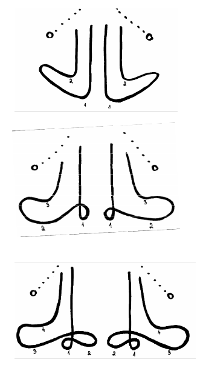

Taktování a dirigování
Taktování
Informace
Taktování je pouhé ukazování taktu podle taktovacího schématu:
Taktovací schéma
Dirigování
Informace
- dirigent - řídí orchestr, používá taktovku, ukazuje dynamiku, nástupy nástrojů, udává tempo
- sbormistr - řídí pěvecký sbor